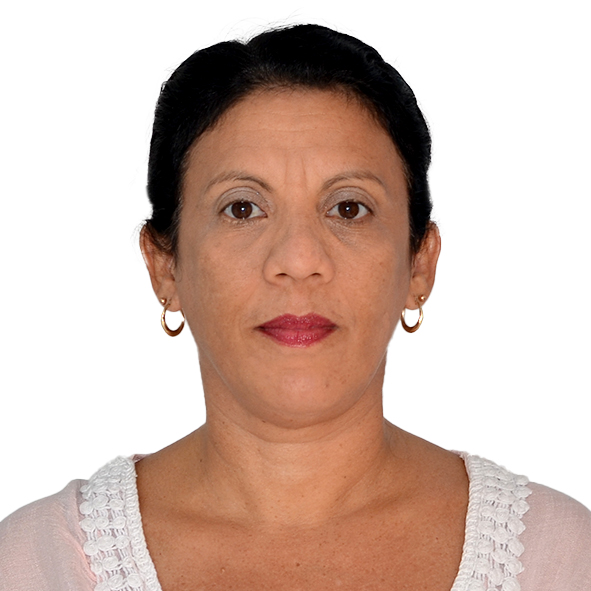

Portafolio Ana Maité Bruzón Díaz

Dra. Ana Maité Bruzón Díaz
Categoría Profesional: Doctora en Estomatología
Experiencia: Principal de Instructor. Febrero 2006. 16 años.
Categoría docente actual: Principal Asistente. Julio 2014
Primera Especialidad: Especialista de Primer Grado en Estomatología General Integral
Especialidad en Segundo Grado en Estomatología General Integral
Maestría Aprobada: Máster en Atención de Urgencias Estomatológicas.Julio 2009.
Categoría Investigador: Investigador agregado. Julio 2018